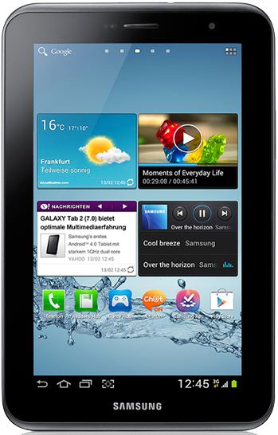

삼성 갤럭시 탭 2
1. 외관

삼성전자가 2012년 2월, MWC 2012에서 공개한 안드로이드 태블릿 컴퓨터.
2. 사양
| 프로세서 | TI OMAP 4430 SoC. ARM Cortex-A9 MP2 1 GHz CPU, PowerVR SGX540 300 MHz GPU | ||
| 메모리 | 1 GB LPDDR2 SDRAM, 8 / 16 / 32 GB 내장 메모리, micro SDHC (최대 32 GB 지원) | ||
| 디스플레이 |
7.0인치 WSVGA(1024 x 600) RGB 서브픽셀 방식의 삼성D PLS TFT-LCD (170 ppi) 멀티터치 지원 정전식 터치 스크린 |
||
| 네트워크 | 기본 | HSPA+ 21Mbps, HSDPA & HSUPA & UMTS, GSM & EDGE | Wi-Fi 802.11a/b/g/n 블루투스 3.0 |
| - | - | ||
| 카메라 | 전면 30만 화소, 후면 320만 화소 | ||
| 배터리 | 내장형 Li-lon 4000 mAh | ||
| 운영체제 | 안드로이드 4.0 (Icecream Sandwich) → 4.1 → 4.2 (Jelly Bean) | ||
| 규격 | 122.4 x 193.7 x 10.5 mm, 344 g (Wi-Fi 모델) / 345 g (셀룰러 모델) | ||
3. 상세
1세대 갤럭시 탭 시리즈인 갤럭시 탭 7.0과 갤럭시 탭 7.0 플러스의 후속작이다. 디자인은 전작보다 확실히 미려해지고 가벼워졌으나, 사양은 갤럭시 탭 7.0 플러스와 비슷하다. 이 때문에 기존 제품들과의 네이밍을 배제하고 지은 듯하여 논란이 있다. 크게 상향된 사양도, 동결인 사양도 아니기 때문이다. 그저 자신들이 판을 벌렸던 7인치 시장의 크기가 커지니 이에 대응하여 출시된 물건이라고 인지하는 것이 나을 것으로 보인다. 다만, 삼성전자에서 2013년에 후속작인 갤럭시 탭 3 7.0을 출시 함에 따라 7.0인치 라인업을 공식적으로 굳힌 것으로 보인다.